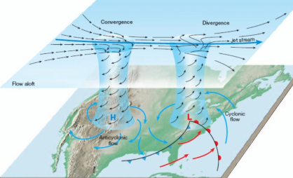

Atmosfera
The biggest sample of gas readily accessible to us is the atmosphere, a mixture of gases with the composition summarized in Table 1.3.
Local variations of pressure, temperature, and composition in the troposphere are manifest as ‘weather’.
A small region of air is termed a parcel. First, we note that a parcel of warm air is less dense than the same parcel of cool air. As a parcel rises, it expands adiabatically (that is, without transfer of heat from its surroundings), so it cools. Cool air can absorb lower concentrations of water vapour than warm air, so the moisture forms clouds.
Cloudy skies can therefore be associated with rising air.
Clear skies are often associated with descending air.
In meteorology, large-scale vertical movement is called convection. Horizontal pressure differentials result in the flow of air that we call wind.
Winds coming from the north in the Northern hemisphere and from the south in the Southern hemisphere are deflected towards the west as they migrate from a region where the Earth is rotating slowly (at the poles) to where it is rotating most rapidly (at the equator). Winds travel nearly parallel to the isobars, with low pressure to their left in the Northern hemisphere and to the right in the Southern hemisphere. At the surface, where wind speeds are lower, the winds tend to travel perpendicular to the isobars from high to low pressure. This differential motion results in a spiral outward flow of air clockwise in the Northern hemisphere around a high and an inward counter-clockwise flow around a low.
The air lost from regions of high pressure is restored as an influx of air converges into the region and descends (fig.1). As we have seen, descending air is associated with clear skies. It also becomes warmer by compression as it descends, so regions of high pressure are associated with high surface temperatures. In winter, the cold surface air may prevent the complete fall of air, and result in a temperature inversion, with a layer of warm air over a layer of cold air. Geographical conditions may also trap cool air, as in Los Angeles, and the photochemical pollutants we know as smog may be trapped under the warm layer.
